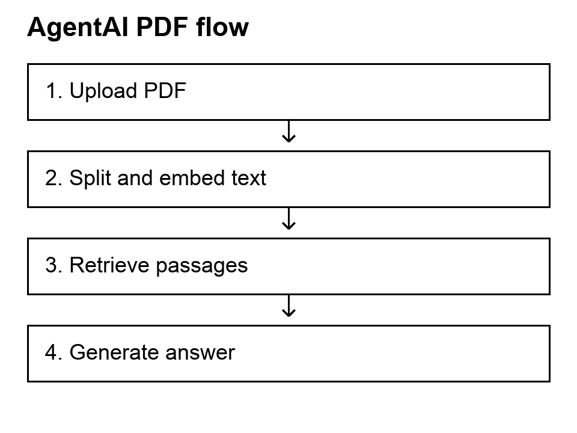

AgentAI PDF Assistant
The user task
A reader wants to ask a question about a PDF without manually searching the whole document. I built a React and Express assistant that retrieves passages relevant to the question and uses them as context for an answer.
The document answer should be based on the uploaded PDF. A separate MCP and SerpAPI route handles web search, and the interface presents the two responses separately.
From document to answer
- The user uploads a PDF through the React interface.
- The Express service loads its text, splits it into overlapping chunks, and creates embeddings.
- The chunks and embeddings are stored in an in-memory vector index.
- A question retrieves relevant chunks, which become context for the answer.

My implementation decisions
Reuse the document index
I cached the vector index for the most recently processed document. A file key based on its path, size, and modification time allows later questions about the same PDF to reuse the index.
Keep independent answers available
I ran the document and web requests concurrently using separate result handling. If one provider fails, the other result can still be returned. I also added browser speech recognition and text-to-speech to the project.
Current scope
The vector index lives in server memory, so it is not durable storage. The server tracks the current uploaded PDF, and answer generation depends on external services. Retrieval provides relevant context but does not guarantee that every generated answer is correct.